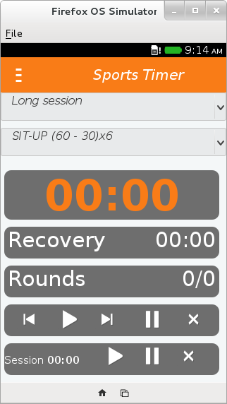
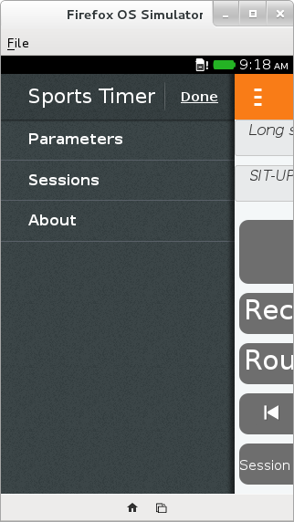
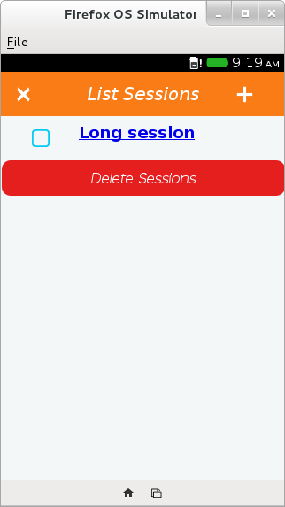
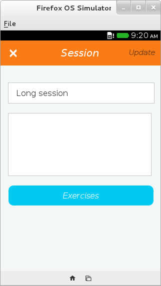
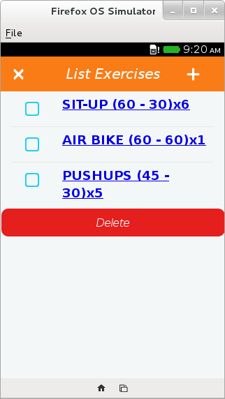
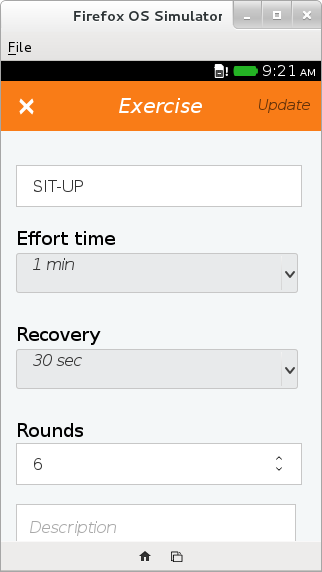
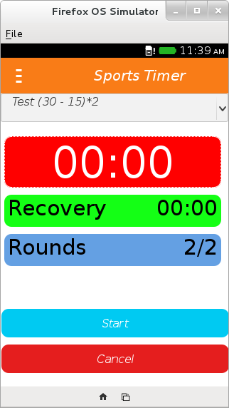
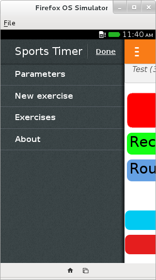
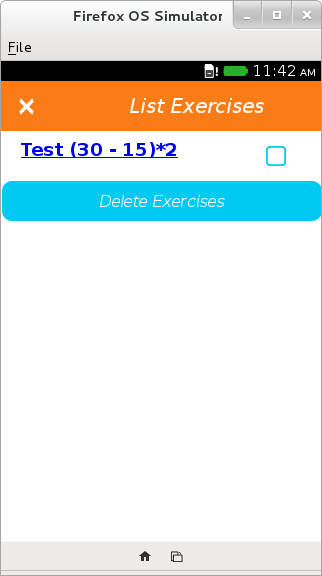
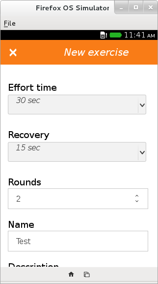

Screenshot






Sports Timer V1.0
Description
Sports Timer is a application for Workout Timer / Training Timer for Firefox OS.
Features
- Manage exercises (add, delete, update)
- Alarm sound
- Vibration
Sports Timer is distributed under the GNU/GPL licence 3.
Screenshot



